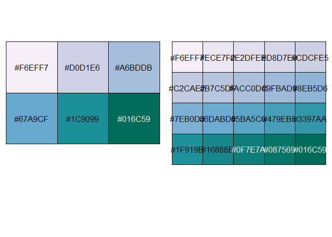

The goal of palettehelper is to help you build and manage color palettes in R for data viz. I mostly made it for myself!
Installation
You can install the development version of palettehelper from GitHub with:
# install.packages("devtools")
devtools::install_github("MargaretSiple-NOAA/palettehelper")Example
Expand the very beautiful (but short) color palettes from your favorite palette package.
library(RColorBrewer)
library(palettehelper)
pal <- RColorBrewer::brewer.pal(n = 6,name = "PuBuGn")
longer_pal <- palettehelper::lengthen_pal(shortpal = pal, newlength = 20)
print(longer_pal)
#> [1] "#F6EFF7" "#ECE7F2" "#E2DFEE" "#D8D7E9" "#CDCFE5" "#C2CAE2" "#B7C5DF"
#> [8] "#ACC0DC" "#9FBAD9" "#8EB5D6" "#7EB0D3" "#6DABD0" "#5BA5C6" "#479EB8"
#> [15] "#3397AA" "#1F919B" "#16888B" "#0F7E7A" "#087569" "#016C59"
par(mfrow=c(1,2))
scales::show_col(pal)
scales::show_col(longer_pal)

U.S. Department of Commerce | National Oceanographic and Atmospheric Administration | NOAA Fisheries